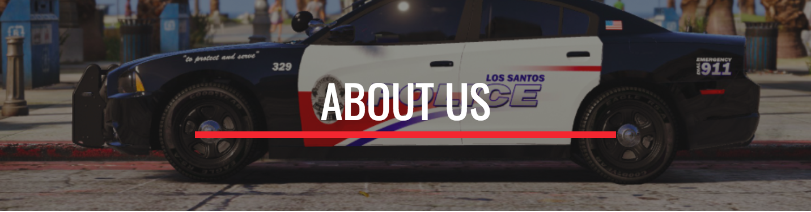

-ABOUT US-
The San Andreas Cops Roleplay Community has been serving the public since August 2018. The approach to a realistic and professional environment is a combined aim of the San Andreas Cops Roleplay community, along with a family oriented Community and love of gaming. Here at SACRP we aim to achieve these tasks by having a Community of members who believe in a respectful and mature environment where we can build a willingness to learn and improving yourself and surroundings.
SACRP is a way is to encourage people with a common interest in First Responders and Civilian Operations to join one of our many Departments offered :
- Civilian Operations
- San Andreas Emergency Communications
- San Andreas Fire Department
- Blaine County Sheriff's Office
- San Andreas Highway Patrol
- Los Santos Police Department
If you are not able to acquire a legitimate copy of Grand Theft Auto V then we encourage you, for experience and to have the same sense of achievement, to join our Communications Department (SAEC). This allows members without the capabilities of being able to pursue an in-game career within the San Andreas Cops Roleplay Community, to pursue an important and ever-evolving career with our Communications Department (SAEC). Creating a thriving atmosphere of friendship and experience.
If you have any concerns or questions, contact our staff team on our Official Discord Server.